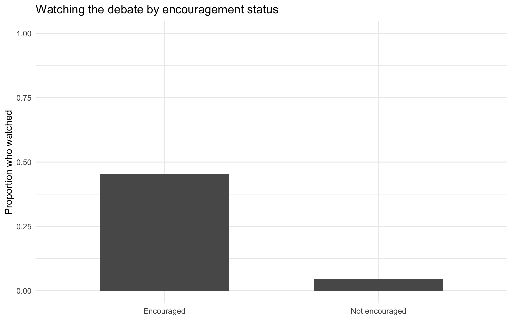
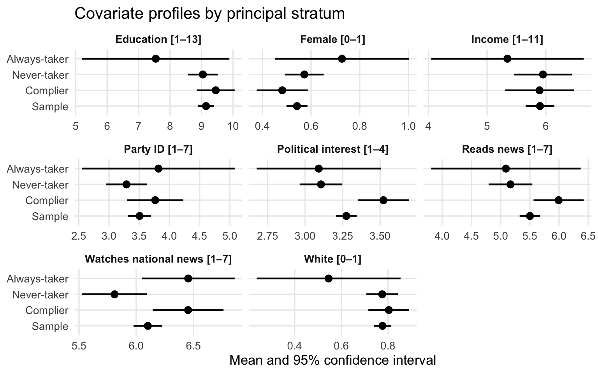

install.packages(c("ivdesc", "ivreg", "dplyr", "ggplot2", "knitr"))Lab 8: Principal Stratification and Instrumental Variables
Learning objectives
By the end of this lab, you should be able to:
- Distinguish assignment from treatment uptake in a randomized encouragement design.
- Define the principal strata: compliers, never-takers, always-takers, and defiers.
- Estimate and interpret the first stage, reduced form, Wald estimator, and 2SLS estimate.
- Explain why the IV estimate identifies a local causal effect rather than the ATE for everyone.
- Reflect on the assumptions behind IV and principal stratification in a real political science application.
The empirical case
This lab is based on Albertson & Lawrence (2009), who studied whether exposure to an educational television debate affected political attitudes and knowledge around California Proposition 209.
The key feature of the design is that respondents were randomly encouraged to watch a Fox debate on affirmative action, but not everyone who received encouragement actually watched. This creates a classic setting with:
- an instrument: encouragement to watch the debate,
- an endogenous treatment: actually watching the debate,
- outcomes related to political attitudes and information.
That is why this paper is a good bridge between instrumental variables and principal stratification.
Main variables in this lab
conditn: randomized encouragement to watch the debate (instrument, (Z))watchpro: actually watched the debate (treatment, (D))support: support for Proposition 209 (main outcome, (Y))infopro: how informed respondents felt about Proposition 209 (extension outcome)
Packages and data
Install packages if needed
Run this once if you do not yet have the packages installed.
Load packages and data
library(ivdesc)
library(ivreg)
library(dplyr)
library(ggplot2)
library(knitr)
data("FoxDebate", package = "ivdesc")
fd <- FoxDebateCausal setup: noncompliance and principal strata
Let:
- (Z_i) be encouragement assignment,
- (D_i) be actual viewing,
- (Y_i) be the outcome of interest.
Because not everyone complies with assignment, each unit can be thought of as belonging to a principal stratum defined by the pair ((D_i(1), D_i(0))):
- Compliers: (D_i(1)=1), (D_i(0)=0)
- Always-takers: (D_i(1)=1), (D_i(0)=1)
- Never-takers: (D_i(1)=0), (D_i(0)=0)
- Defiers: (D_i(1)=0), (D_i(0)=1)
These groups are not directly observed. Principal stratification gives us the language to describe them, while IV gives us a way to estimate a causal effect for one of them: the compliers.
Pair discussion
- In one or two sentences, explain why comparing people who watched the debate to people who did not watch it is not automatically causal.
- Compare your answers with a partner. What kinds of people might choose to watch the debate even without encouragement?
Descriptive analysis
Assignment and uptake
assignment_uptake <- fd %>%
summarise(
n = n(),
encouraged_rate = mean(conditn, na.rm = TRUE),
watched_rate = mean(watchpro, na.rm = TRUE)
)
kable(assignment_uptake, digits = 3)| n | encouraged_rate | watched_rate |
|---|---|---|
| 507 | 0.511 | 0.252 |
uptake_by_assignment <- fd %>%
group_by(conditn) %>%
summarise(
n = n(),
watch_rate = mean(watchpro, na.rm = TRUE)
) %>%
mutate(encouragement = ifelse(conditn == 1, "Encouraged", "Not encouraged"))
kable(uptake_by_assignment, digits = 3)| conditn | n | watch_rate | encouragement |
|---|---|---|---|
| 0 | 248 | 0.044 | Not encouraged |
| 1 | 259 | 0.452 | Encouraged |
ggplot(uptake_by_assignment, aes(x = encouragement, y = watch_rate)) +
geom_col(width = 0.6) +
labs(
title = "Watching the debate by encouragement status",
x = NULL,
y = "Proportion who watched"
) +
ylim(0, 1) +
theme_minimal()
Outcome summaries
fd %>%
summarise(
mean_support = mean(support, na.rm = TRUE),
mean_infopro = mean(infopro, na.rm = TRUE)
) %>%
kable(digits = 3)| mean_support | mean_infopro |
|---|---|
| 0.653 | 3.233 |
fd %>%
group_by(conditn) %>%
summarise(mean_support = mean(support, na.rm = TRUE)) %>%
mutate(encouragement = ifelse(conditn == 1, "Encouraged", "Not encouraged")) %>%
kable(digits = 3)| conditn | mean_support | encouragement |
|---|---|---|
| 0 | 0.656 | Not encouraged |
| 1 | 0.651 | Encouraged |
fd %>%
group_by(watchpro) %>%
summarise(mean_support = mean(support, na.rm = TRUE)) %>%
mutate(watched = ifelse(watchpro == 1, "Watched", "Did not watch")) %>%
kable(digits = 3)| watchpro | mean_support | watched |
|---|---|---|
| 0 | 0.678 | Did not watch |
| 1 | 0.587 | Watched |
Quick interpretation
- Look at the difference in average support by
watchproand byconditn. Which comparison looks more causal, and why? - Why is the comparison by
watchprolikely biased? What does the comparison byconditngive us?
Step 1: The first stage
The first stage asks whether encouragement changed actual viewing.
m_first <- lm(watchpro ~ conditn, data = fd)
summary(m_first)
Call:
lm(formula = watchpro ~ conditn, data = fd)
Residuals:
Min 1Q Median 3Q Max
-0.45174 -0.45174 -0.04435 0.54826 0.95565
Coefficients:
Estimate Std. Error t value Pr(>|t|)
(Intercept) 0.04435 0.02442 1.817 0.0699 .
conditn 0.40738 0.03416 11.926 <2e-16 ***
---
Signif. codes: 0 '***' 0.001 '**' 0.01 '*' 0.05 '.' 0.1 ' ' 1
Residual standard error: 0.3845 on 505 degrees of freedom
Multiple R-squared: 0.2197, Adjusted R-squared: 0.2182
F-statistic: 142.2 on 1 and 505 DF, p-value: < 2.2e-16The coefficient on conditn is the causal effect of encouragement on the probability of actually watching the debate.
Under the IV assumptions, this quantity is also closely related to the share of compliers in the sample.
- Now, interpret the coefficient on
conditnfrom the first-stage model in plain language.
Use the following sentence starter:
Being assigned to encouragement changes the probability of watching the debate by approximately
___percentage points.
Step 2: The reduced form / ITT
The reduced form estimates the effect of the instrument on the outcome.
We begin with support as the main outcome.
m_rf_support <- lm(support ~ conditn, data = fd)
summary(m_rf_support)
Call:
lm(formula = support ~ conditn, data = fd)
Residuals:
Min 1Q Median 3Q Max
-0.6557 -0.6507 0.3443 0.3493 0.3493
Coefficients:
Estimate Std. Error t value Pr(>|t|)
(Intercept) 0.655660 0.032765 20.01 <2e-16 ***
conditn -0.005005 0.045469 -0.11 0.912
---
Signif. codes: 0 '***' 0.001 '**' 0.01 '*' 0.05 '.' 0.1 ' ' 1
Residual standard error: 0.4771 on 439 degrees of freedom
(66 observations deleted due to missingness)
Multiple R-squared: 2.76e-05, Adjusted R-squared: -0.00225
F-statistic: 0.01212 on 1 and 439 DF, p-value: 0.9124This is the intention-to-treat (ITT) effect of encouragement on support for Proposition 209. The coefficient on conditn captures how much support changes when people are encouraged to watch, regardless of whether they actually watch.
Discussion ITT
If encouragement affects the outcome only through viewing the debate, why might the ITT effect be smaller in magnitude than the effect of actually viewing?
Step 3: The Wald estimator by hand
For a binary instrument and binary treatment, the simple Wald estimator is:
LATE = (E[Y | Z=1] - E[Y | Z=0]) / (E[D | Z=1] - E[D | Z=0])
It can be thought as the effect of encouragement on the outcome (the reduced form) scaled by how much encouragement changes treatment uptake (the first stage).
In regression language, it is the reduced-form coefficient divided by the first-stage coefficient.
wald_support <- coef(m_rf_support)["conditn"] / coef(m_first)["conditn"]
wald_support conditn
-0.01228662 Interpretation of the Wald estimate: > The Local Average Treatment Effect (LATE) of watching the debate on support for Proposition 209 is approximately -1.2 percentage points. This means that for the subgroup of compliers, who watched the debate because they were encouraged, watching the debate caused a change in support of -1.2 percentage points.
Example for the extension outcome (infopro)
m_rf_info <- lm(infopro ~ conditn, data = fd)
m_first_info <- lm(watchpro ~ conditn, data = fd)
wald_info <- coef(m_rf_info)["conditn"] / coef(m_first_info)["conditn"]
wald_info conditn
0.2380046 Wald estimation discussion
- Why does dividing the reduced form by the first stage recover an effect for compliers rather than for everybody?
Step 4: Naive OLS vs IV
A naive regression compares people who watched the debate to people who did not.
m_ols_support <- lm(support ~ watchpro, data = fd)
summary(m_ols_support)
Call:
lm(formula = support ~ watchpro, data = fd)
Residuals:
Min 1Q Median 3Q Max
-0.6781 -0.5868 0.3219 0.3219 0.4132
Coefficients:
Estimate Std. Error t value Pr(>|t|)
(Intercept) 0.67812 0.02657 25.521 <2e-16 ***
watchpro -0.09135 0.05073 -1.801 0.0724 .
---
Signif. codes: 0 '***' 0.001 '**' 0.01 '*' 0.05 '.' 0.1 ' ' 1
Residual standard error: 0.4753 on 439 degrees of freedom
(66 observations deleted due to missingness)
Multiple R-squared: 0.007332, Adjusted R-squared: 0.005071
F-statistic: 3.243 on 1 and 439 DF, p-value: 0.07243Now estimate the IV model using conditn as an instrument for watchpro.
m_iv_support <- ivreg(support ~ watchpro | conditn, data = fd)
summary(m_iv_support, diagnostics = TRUE)
Call:
ivreg(formula = support ~ watchpro | conditn, data = fd)
Residuals:
Min 1Q Median 3Q Max
-0.6563 -0.6446 0.3437 0.3437 0.3554
Coefficients:
Estimate Std. Error t value Pr(>|t|)
(Intercept) 0.65627 0.03690 17.79 <2e-16 ***
watchpro -0.01168 0.10603 -0.11 0.912
Diagnostic tests:
df1 df2 statistic p-value
Weak instruments 1 439 131.261 <2e-16 ***
Wu-Hausman 1 438 0.737 0.391
Sargan 0 NA NA NA
---
Signif. codes: 0 '***' 0.001 '**' 0.01 '*' 0.05 '.' 0.1 ' ' 1
Residual standard error: 0.4767 on 439 degrees of freedom
Multiple R-Squared: 0.001756, Adjusted R-squared: -0.0005184
Wald test: 0.01214 on 1 and 439 DF, p-value: 0.9123 Compare the three quantities
comparison_simple <- data.frame(
estimate = c("Naive OLS: Y ~ D",
"Reduced form / ITT: Y ~ Z",
"First stage / compliance: D ~ Z",
"Manual Wald",
"Wald / IV (simple)"),
value = c(
coef(m_ols_support)["watchpro"],
coef(m_rf_support)["conditn"],
coef(m_first)["conditn"],
wald_support,
coef(m_iv_support)["watchpro"]
)
)
kable(comparison_simple, digits = 3)| estimate | value |
|---|---|
| Naive OLS: Y ~ D | -0.091 |
| Reduced form / ITT: Y ~ Z | -0.005 |
| First stage / compliance: D ~ Z | 0.407 |
| Manual Wald | -0.012 |
| Wald / IV (simple) | -0.012 |
Small groups. Why are these five estimates different? Which one has a causal interpretation under the IV assumptions?
Step 5: Add covariates
The core IV logic comes from the randomized encouragement. Still, we can add pre-treatment covariates to improve precision.
We will use the following covariates:
partyid(party identification)pnintst(political interest)watchnat(watches national news)educad(education)readnews(reads news)gender(gender)income(income)white(race)
Because ivreg() requires exogenous covariates to appear on both sides of the instrument formula, the model looks like this:
fd_support <- fd %>%
select(support, watchpro, conditn, partyid, pnintst, watchnat, educad,
readnews, gender, income, white) %>%
filter(complete.cases(.))
nrow(fd_support)[1] 441m_ols_support_adj <- lm(
support ~ watchpro + partyid + pnintst + watchnat + educad +
readnews + gender + income + white,
data = fd_support
)
summary(m_ols_support_adj)
Call:
lm(formula = support ~ watchpro + partyid + pnintst + watchnat +
educad + readnews + gender + income + white, data = fd_support)
Residuals:
Min 1Q Median 3Q Max
-1.0082 -0.3536 0.1221 0.2803 0.7565
Coefficients:
Estimate Std. Error t value Pr(>|t|)
(Intercept) 1.029367 0.142025 7.248 1.97e-12 ***
watchpro -0.072110 0.045424 -1.587 0.113135
partyid -0.085832 0.009575 -8.964 < 2e-16 ***
pnintst -0.036382 0.029515 -1.233 0.218371
watchnat 0.008117 0.014377 0.565 0.572653
educad -0.012528 0.007901 -1.586 0.113583
readnews -0.006965 0.011499 -0.606 0.545043
gender -0.026028 0.041317 -0.630 0.529052
income 0.006740 0.007748 0.870 0.384791
white 0.183034 0.052404 3.493 0.000527 ***
---
Signif. codes: 0 '***' 0.001 '**' 0.01 '*' 0.05 '.' 0.1 ' ' 1
Residual standard error: 0.4239 on 431 degrees of freedom
Multiple R-squared: 0.2249, Adjusted R-squared: 0.2087
F-statistic: 13.89 on 9 and 431 DF, p-value: < 2.2e-16m_iv_support_adj <- ivreg(
support ~ watchpro + partyid + pnintst + watchnat + educad +
readnews + gender + income + white |
conditn + partyid + pnintst + watchnat + educad +
readnews + gender + income + white,
data = fd_support
)
dim(fd)[1] 507 12nobs(m_iv_support_adj)[1] 441summary(m_iv_support_adj, diagnostics = TRUE)
Call:
ivreg(formula = support ~ watchpro + partyid + pnintst + watchnat +
educad + readnews + gender + income + white | conditn + partyid +
pnintst + watchnat + educad + readnews + gender + income +
white, data = fd_support)
Residuals:
Min 1Q Median 3Q Max
-1.0067 -0.3541 0.1236 0.2819 0.7577
Coefficients:
Estimate Std. Error t value Pr(>|t|)
(Intercept) 1.028583 0.142465 7.220 2.37e-12 ***
watchpro -0.066421 0.092714 -0.716 0.474125
partyid -0.085878 0.009598 -8.947 < 2e-16 ***
pnintst -0.036513 0.029574 -1.235 0.217640
watchnat 0.008138 0.014381 0.566 0.571757
educad -0.012520 0.007902 -1.584 0.113864
readnews -0.007043 0.011553 -0.610 0.542424
gender -0.025910 0.041351 -0.627 0.531260
income 0.006736 0.007748 0.869 0.385097
white 0.183058 0.052406 3.493 0.000527 ***
Diagnostic tests:
df1 df2 statistic p-value
Weak instruments 1 431 136.139 <2e-16 ***
Wu-Hausman 1 430 0.005 0.944
Sargan 0 NA NA NA
---
Signif. codes: 0 '***' 0.001 '**' 0.01 '*' 0.05 '.' 0.1 ' ' 1
Residual standard error: 0.4239 on 431 degrees of freedom
Multiple R-Squared: 0.2248, Adjusted R-squared: 0.2087
Wald test: 13.67 on 9 and 431 DF, p-value: < 2.2e-16 comparison_adjusted <- data.frame(
estimate = c("Adjusted OLS", "Not adjusted OLS", "Adjusted IV", "Not adjusted IV"),
value = c(
coef(m_ols_support_adj)["watchpro"],
coef(m_ols_support)["watchpro"],
coef(m_iv_support_adj)["watchpro"],
coef(m_iv_support)["watchpro"]
)
)
kable(comparison_adjusted, digits = 3)| estimate | value |
|---|---|
| Adjusted OLS | -0.072 |
| Not adjusted OLS | -0.091 |
| Adjusted IV | -0.066 |
| Not adjusted IV | -0.012 |
Reflection on covariates
- Did adding covariates substantially change the IV estimate? Why might covariates matter less for identification here than in a purely observational design?
Step 6: Principal stratification interpretation
The IV estimate is not the treatment effect for all respondents. Under the usual assumptions, it is the Local Average Treatment Effect (LATE), also called the Complier Average Causal Effect (CACE).
That means:
- the estimate applies to people whose viewing behavior was changed by encouragement,
- not to always-takers,
- not to never-takers,
- and not to the full sample as a whole.
This is the connection to principal stratification: IV identifies a causal effect for one latent principal stratum, namely the compliers.
Short discussion
- How would you explain the IV estimate to a non-technical audience? What does it tell us about the effect of watching the debate on support for Proposition 209? >The IV estimate tells us how encouragement to watch the debate affected the outcome by increasing actual watching among some respondents. Under the IV assumptions, this estimate is interpreted as the causal effect of watching for the compliers, meaning the people who watched only because they were encouraged. It does not describe the effect for everyone in the sample, but specifically for those whose behavior changed in response to encouragement.
Step 7: Profiling compliers with ivdesc
One advantage of the ivdesc package is that it lets us describe the covariate profile of the latent subpopulations (e.g., compliers, always-takers, never-takers).
Below we use readnews as an example covariate.
profile_readnews <- with(fd, ivdesc(X = readnews, D = watchpro, Z = conditn, boot = FALSE))
profile_readnews_df <- as.data.frame(profile_readnews)
profile_readnews_df group mu mu_se pi pi_se
1 sample 5.500990 0.08948441 1.00000000 0.00000000
2 co 5.992418 0.21865402 0.40738261 0.03363887
3 nt 5.169014 0.19041350 0.54826255 0.03098329
4 at 5.090909 0.65302855 0.04435484 0.01309997You can repeat this for other covariates such as partyid, watchnat, or educad. You can also write a function to automate this process and create a combined plot of covariate profiles for compliers, always-takers, and never-takers across multiple covariates.
profile_iv_var <- function(data, var, D = "watchpro", Z = "conditn", label = NULL) {
out_df <- as.data.frame(
ivdesc::ivdesc(
X = data[[var]],
D = data[[D]],
Z = data[[Z]],
boot = FALSE
)
)
# Check that ivdesc returned the expected structure
if (!all(c("mu", "mu_se") %in% names(out_df))) {
stop("The ivdesc output does not contain 'mu' and 'mu_se'. Run as.data.frame(ivdesc(...)) and inspect it.")
}
if (nrow(out_df) != 4) {
stop("Expected 4 rows from ivdesc(): Sample, Complier, Never-taker, Always-taker.")
}
rng <- range(data[[var]], na.rm = TRUE)
facet_label <- if (is.null(label)) {
paste0(var, " [", round(rng[1], 2), "–", round(rng[2], 2), "]")
} else {
paste0(label, " [", round(rng[1], 2), "–", round(rng[2], 2), "]")
}
out_df %>%
mutate(
group = factor(
c("Sample", "Complier", "Never-taker", "Always-taker"),
levels = c("Sample", "Complier", "Never-taker", "Always-taker")
),
lower = mu - 1.96 * mu_se,
upper = mu + 1.96 * mu_se,
facet = facet_label
) %>%
select(facet, group, mu, mu_se, lower, upper)
}
profiles <- bind_rows(
profile_iv_var(fd, "educad", label = "Education"),
profile_iv_var(fd, "gender", label = "Female"),
profile_iv_var(fd, "income", label = "Income"),
profile_iv_var(fd, "partyid", label = "Party ID"),
profile_iv_var(fd, "pnintst", label = "Political interest"),
profile_iv_var(fd, "readnews", label = "Reads news"),
profile_iv_var(fd, "watchnat", label = "Watches national news"),
profile_iv_var(fd, "white", label = "White")
)
ggplot(profiles, aes(x = mu, y = group)) +
geom_errorbarh(aes(xmin = lower, xmax = upper), height = 0, linewidth = 0.8) +
geom_point(size = 2.8) +
facet_wrap(~ facet, scales = "free_x", ncol = 3) +
labs(
title = "Covariate profiles by principal stratum",
x = "Mean and 95% confidence interval",
y = NULL
) +
theme_minimal(base_size = 13) +
theme(
strip.text = element_text(face = "bold"),
panel.grid.minor = element_blank()
)
Interpretation of covariate profiles
- Compare the estimated mean of the different covariates for compliers, always-takers, and never-takers.
What does that suggest about who the compliers are in this study?
Step 8: Extension outcome
Now repeat the IV analysis using infopro instead of support.
fd_info <- fd %>%
select(infopro, watchpro, conditn, partyid, pnintst, watchnat, educad,
readnews, gender, income, white) %>%
filter(complete.cases(.))
nrow(fd_info)[1] 498m_iv_info <- ivreg(infopro ~ watchpro | conditn, data = fd_info)
summary(m_iv_info, diagnostics = TRUE)
Call:
ivreg(formula = infopro ~ watchpro | conditn, data = fd_info)
Residuals:
Min 1Q Median 3Q Max
-2.4055 -0.4055 -0.1732 0.8268 0.8268
Coefficients:
Estimate Std. Error t value Pr(>|t|)
(Intercept) 3.17325 0.05842 54.321 <2e-16 ***
watchpro 0.23221 0.17642 1.316 0.189
Diagnostic tests:
df1 df2 statistic p-value
Weak instruments 1 496 146.646 <2e-16 ***
Wu-Hausman 1 495 0.171 0.679
Sargan 0 NA NA NA
---
Signif. codes: 0 '***' 0.001 '**' 0.01 '*' 0.05 '.' 0.1 ' ' 1
Residual standard error: 0.8219 on 496 degrees of freedom
Multiple R-Squared: 0.02321, Adjusted R-squared: 0.02124
Wald test: 1.732 on 1 and 496 DF, p-value: 0.1887 m_iv_info_adj <- ivreg(
infopro ~ watchpro + partyid + pnintst + watchnat + educad +
readnews + gender + income + white |
conditn + partyid + pnintst + watchnat + educad +
readnews + gender + income + white,
data = fd_info
)
summary(m_iv_info_adj, diagnostics = TRUE)
Call:
ivreg(formula = infopro ~ watchpro + partyid + pnintst + watchnat +
educad + readnews + gender + income + white | conditn + partyid +
pnintst + watchnat + educad + readnews + gender + income +
white, data = fd_info)
Residuals:
Min 1Q Median 3Q Max
-2.5209 -0.4678 0.1808 0.5174 1.9674
Coefficients:
Estimate Std. Error t value Pr(>|t|)
(Intercept) 1.7974733 0.2341983 7.675 9.08e-14 ***
watchpro 0.2710942 0.1581696 1.714 0.0872 .
partyid -0.0172838 0.0159602 -1.083 0.2794
pnintst 0.2516340 0.0473181 5.318 1.60e-07 ***
watchnat 0.0003988 0.0240421 0.017 0.9868
educad 0.0034257 0.0128887 0.266 0.7905
readnews 0.1078912 0.0188852 5.713 1.93e-08 ***
gender -0.0527521 0.0686682 -0.768 0.4427
income -0.0089268 0.0129878 -0.687 0.4922
white 0.0657215 0.0855288 0.768 0.4426
Diagnostic tests:
df1 df2 statistic p-value
Weak instruments 1 488 151.612 <2e-16 ***
Wu-Hausman 1 487 0.089 0.766
Sargan 0 NA NA NA
---
Signif. codes: 0 '***' 0.001 '**' 0.01 '*' 0.05 '.' 0.1 ' ' 1
Residual standard error: 0.7467 on 488 degrees of freedom
Multiple R-Squared: 0.2067, Adjusted R-squared: 0.192
Wald test: 13.49 on 9 and 488 DF, p-value: < 2.2e-16 # Compare all models (e.g., infopro and support, simple and adjusted) in a single table or plot.
kable(data.frame(
estimate = c("IV (simple) for infopro", "IV (adjusted) for infopro", "IV (simple) for support", "IV (adjusted) for support"),
value = c(coef(m_iv_info)["watchpro"], coef(m_iv_info_adj)["watchpro"], coef(m_iv_support)["watchpro"], coef(m_iv_support_adj)["watchpro"])
), digits = 3)| estimate | value |
|---|---|
| IV (simple) for infopro | 0.232 |
| IV (adjusted) for infopro | 0.271 |
| IV (simple) for support | -0.012 |
| IV (adjusted) for support | -0.066 |
Group discussion
Do the results look more convincing for infopro than for support? Why might media exposure affect feeling informed more directly than vote choice or policy support?
Step 9: Assumptions
IV requires more than random assignment:
1. Relevance
The instrument must affect treatment uptake.
- Here: encouragement must increase the probability of watching.
2. Independence
The instrument must be as good as randomly assigned.
- Here: this is built into the research design.
3. Exclusion restriction
The instrument affects the outcome only through the treatment.
- Here: encouragement should affect attitudes only because it changed viewing behavior.
4. Monotonicity
There are no defiers.
- Here: nobody should become less likely to watch because they were encouraged.
Assumptions debate (group discussion)
- What does this assumptions mean in this study?
- Why might them be plausible?
- What could threaten them?
- If they fail, how would the interpretation of the IV estimate change?
Final takeaway
This lab shows why principal stratification and instrumental variables belong together.
- Random encouragement gives us an instrument.
- Imperfect uptake creates noncompliance.
- The first stage captures how encouragement changes treatment uptake.
- The reduced form captures how encouragement changes outcomes.
- The IV/Wald estimator scales the reduced form by compliance.
- The result is a causal effect for compliers, not for everyone.
That is the core logic of LATE/CACE in randomized encouragement designs.